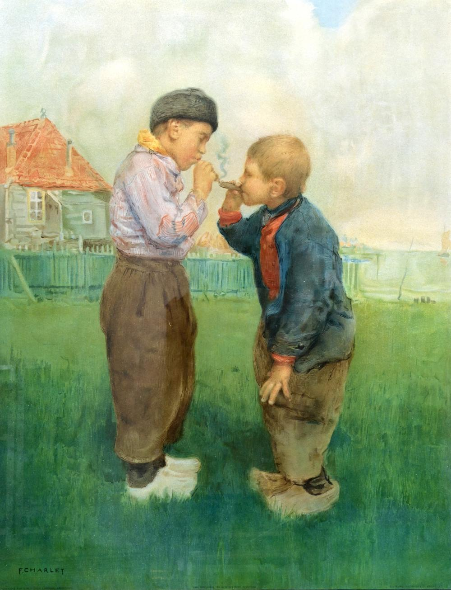

Poems
Traveler
—for my brother

Immemorial sadness and I woke from a dream of time bending. The past broke on the concrete, a dropped bottle of Coke, green shards scattering the ground and I joked nice job you dummy, trying to invoke our father’s stern voice, mimicked through the smoke of our first cigarettes. I swear he spoke from my mouth, that same disappointment stoked the ashes of distressed memories, choked with fear he’d find us, two criminals cloaked in those basement mysteries; childhood’s yoke— two words, no and no. That’s when I awoke well-knowing what malady I’d provoked: the clock, its pendulum stuck in dead-stroke.
Timothy Geiger is the author of four poetry collections, most recently “In a Field of Hallowed Be,” published in September 2024 from Terrapin Books. He is also the author of ten chapbooks, with an eleventh, “Antediluvian,” forthcoming from Aureole Press in 2027. He runs a small farmstead in Northwest Ohio raising goats, chickens, ducks, turkeys and pigs, and teaches Creative Writing, Poetry and Book Arts at The University of Toledo.